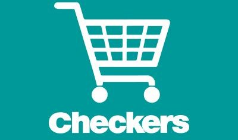
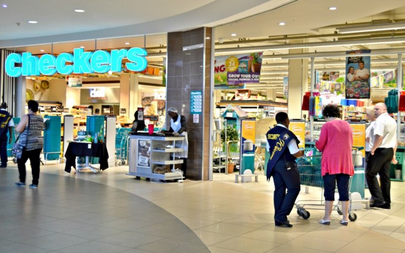

CHECKERS
Checkers is a FNCG retailer owed by Shoprite that operates in South Africa.Checkers currently has 37 Checkers Hypers and 202 Checkers supermarkets oparating in Botswana,South Africa and Namibia.The supermarket chain focuses more strongly on fresh produce and offers a wider range ofchoice food items to a more affluent clientele.